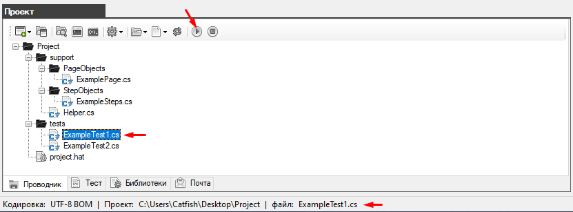
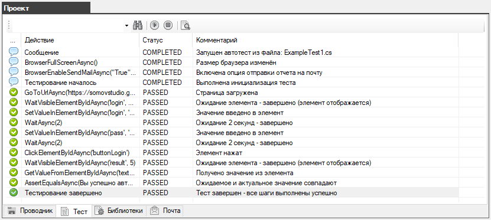
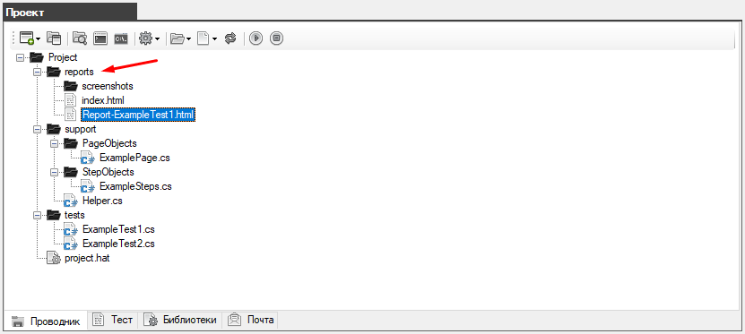
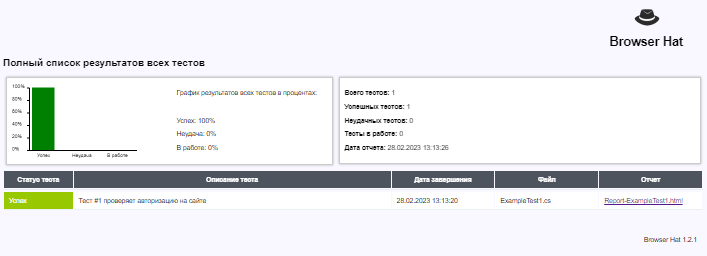
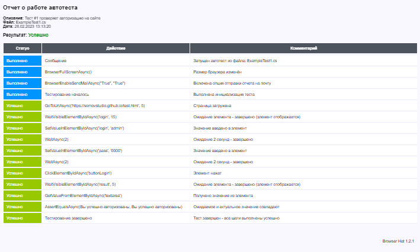
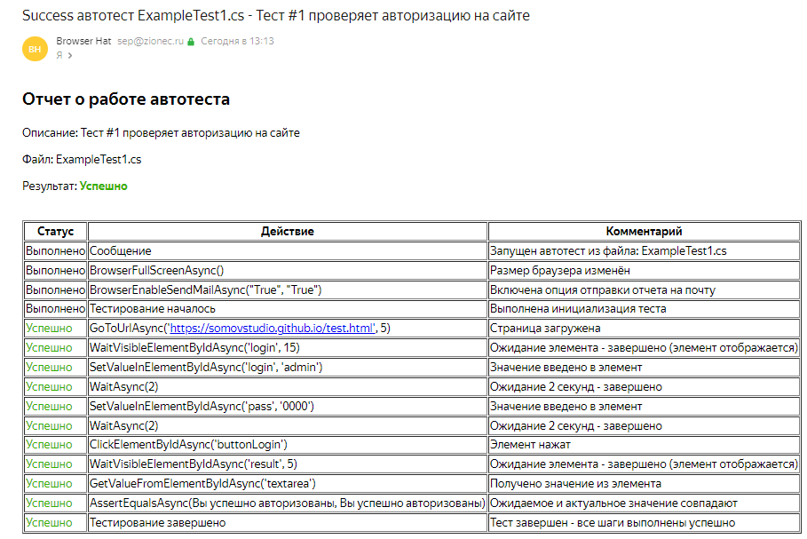

Запуск автотеста
Чтобы запустить автотест нужно его выбрать в папке tests и нажать на кнопку "Запустить тест"
В нашем случае запускается файл ExampleTest1.cs

Процесс проверки отображается на вкладке "Тест"

По завершению работы автотеста в корне проекта будет создана папка "report" в которой содержаться все отчеты и скриншоты с результатами выполненной проверки.

Нажав дважды на файл отчета (например Report-ExampleTest1.html) вы получите отчет с полным описание о ходе выполнения автотеста.
Подробно про отчеты и отправку отчетов по почте смотрите в соответствующих разделах.



В результате проект был создан, автотест запущен и в результате получен отчет.
Created with the Personal Edition of HelpNDoc: Full-featured multi-format Help generator